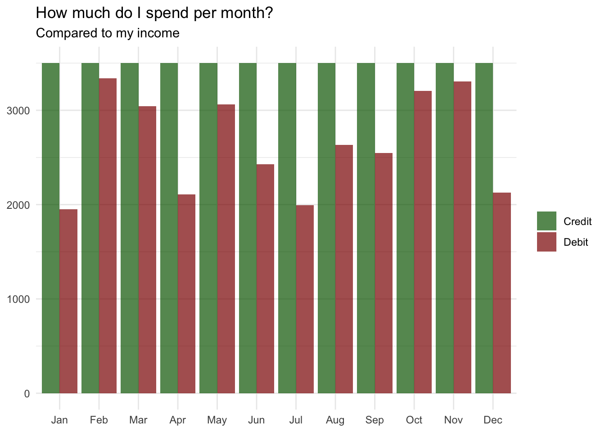
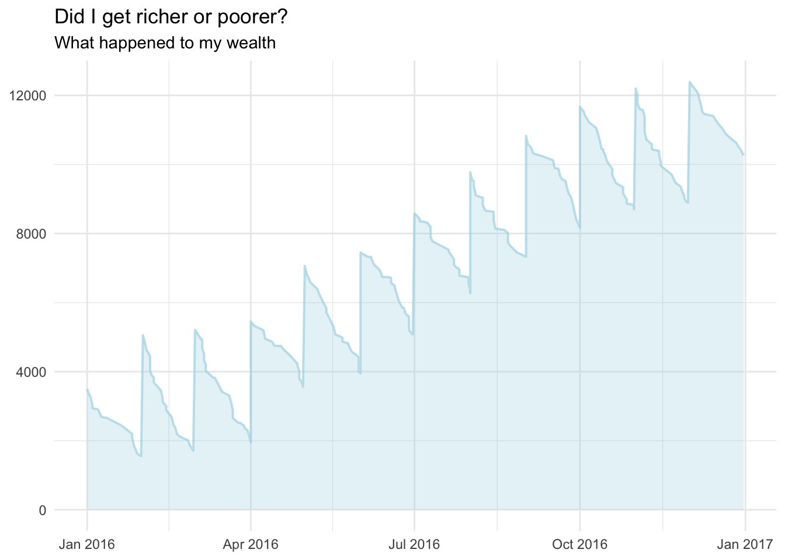
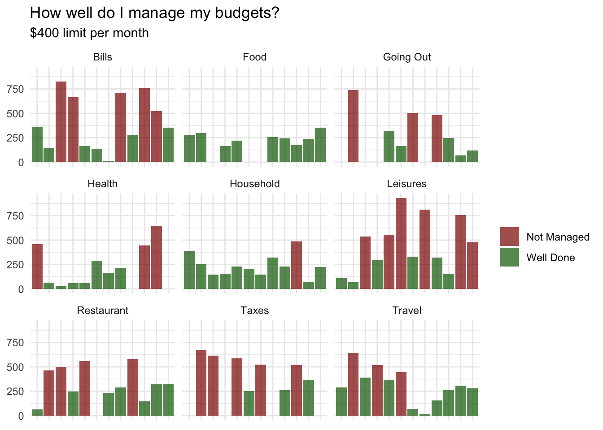
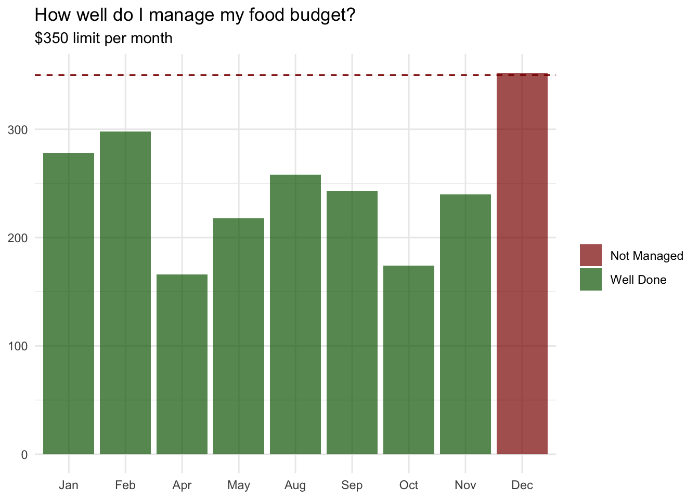
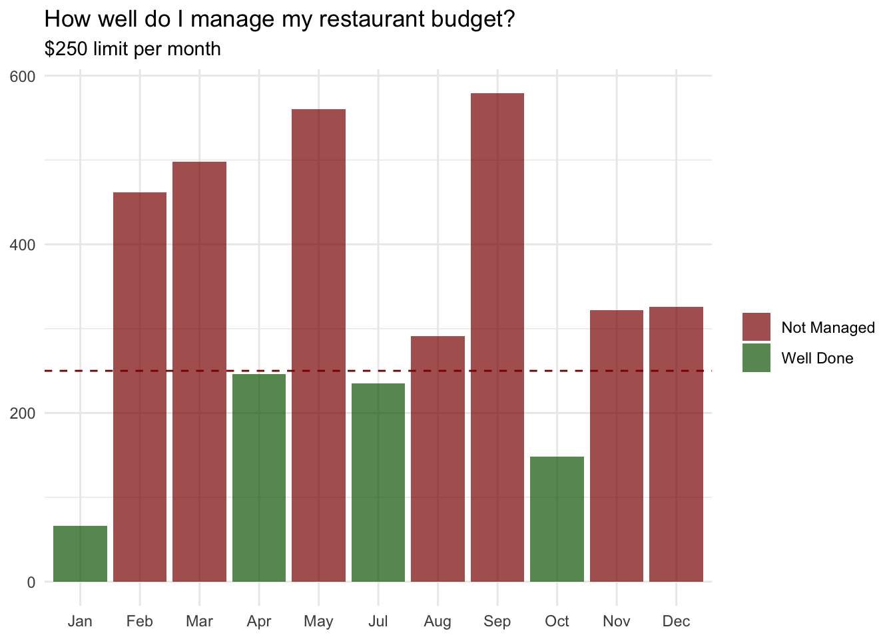

I’ve been doing basic accounting for a while now and last year I discovered the simple, yet powerful application Debit & Credit. I always thought it was a bit of a hassle, but ever since I’ve started to use it, I’ve been keeping track of every single expense. It does exactly what it tells: keeping financial records and never accessing my data. Of course this isn’t rocket science but it’s useful.
This post isn’t designed to help you gain an understanding of how to a read financial report and I assume you know how to read the basic parts already. If not, you know that wikipedia is always happy to help. I will not train you to be an accountant, but we should be able to look at a dataset of financial statements and try to reproduce some of the usually reported graphs.
But first things first, and before looking at what financial statements show, we need some data.
Show me the money!
Yes! And preferably not mine. I value my privacy and I would prefer not to release any accurate financial information about myself. I strictly follow Donald T. advices on that.
Let’s rather define a function that can automatically generate fake debits.
generatedebit <- function(n = 10, start = '2016/01/01', end = '2016/12/31') {
# Define function that automatically generates debits
df <- data.frame(Days = sort(sample(seq(as.Date(start), as.Date(end), by = "day"),
n, replace = TRUE)),
Description = sample(c("Debit Card", "Credit Card", "Direct Debit", "Transfer"),
n, replace = TRUE, prob = c(.75, .15, .05, .05)),
Category = sample(c("Food", "Restaurant", "Travel",
"Going Out", "Health", "Household",
"Taxes", "Bills", "Leisures"),
n, replace = TRUE),
Payee = sample(LETTERS[1:20], n, replace = TRUE),
Tag = sample(c("Red", "Green", "Blue", NA),
n, replace = TRUE, prob = c(.05, .15, .1, .7)),
Account = sample(c("Barclays", "HSBC"),
n, replace = TRUE, prob = c(.8, .2)),
Amount = sample(-250:-1, n, replace = TRUE))
return(df)
}I voluntarily add some metadata too, like a description, categories, and some sample payees so as to make it look more like a real exported all account summary. Let’s assume I’ve put some tags as well and I have accounts opened at two different institutions.
Here is what a sample output looks like for n = 10.
generatedebit()
## Days Description Category Payee Tag Account Amount
## 1 2016-01-13 Debit Card Taxes C <NA> Barclays -224
## 2 2016-04-09 Debit Card Leisures R <NA> Barclays -35
## 3 2016-04-24 Credit Card Restaurant D <NA> HSBC -217
## 4 2016-05-04 Debit Card Travel C <NA> Barclays -14
## 5 2016-06-21 Debit Card Bills G Blue Barclays -195
## 6 2016-06-25 Debit Card Restaurant F <NA> Barclays -162
## 7 2016-09-29 Debit Card Food T <NA> HSBC -114
## 8 2016-10-01 Debit Card Travel G <NA> Barclays -91
## 9 2016-10-02 Debit Card Bills R <NA> Barclays -49
## 10 2016-11-21 Transfer Restaurant G <NA> HSBC -101Of course, it’s really good to spend money for all these shiny things, but we need to receive revenue for that. Let’s add another function that generates fake credits. Less sample uses there as I always get my money directly transferred to my account.
generatecredit <- function(n = 12, amount = 3500, start = '2016/01/01', end = '2016/12/31') {
# Define function that automatically generates credits
df <- data.frame(Days = sort(sample(seq(as.Date(start), as.Date(end), by = "month"),
n, replace = FALSE)),
Description = rep("Transfer", n, replace = TRUE),
Category = rep("Salary", n, replace = TRUE),
Payee = rep("Kawa&Co.", n, replace = TRUE),
Tag = rep("Hooray", n, replace = TRUE),
Account = rep("Barclays", n, replace = TRUE),
Amount = rep(amount, n, replace = TRUE))
return(df)
}With replace = FALSE it gives by default one salary of $3500 on the first day of each month.
generatecredit()
## Days Description Category Payee Tag Account Amount
## 1 2016-01-01 Transfer Salary Kawa&Co. Hooray Barclays 3500
## 2 2016-02-01 Transfer Salary Kawa&Co. Hooray Barclays 3500
## 3 2016-03-01 Transfer Salary Kawa&Co. Hooray Barclays 3500
## 4 2016-04-01 Transfer Salary Kawa&Co. Hooray Barclays 3500
## 5 2016-05-01 Transfer Salary Kawa&Co. Hooray Barclays 3500
## 6 2016-06-01 Transfer Salary Kawa&Co. Hooray Barclays 3500
## 7 2016-07-01 Transfer Salary Kawa&Co. Hooray Barclays 3500
## 8 2016-08-01 Transfer Salary Kawa&Co. Hooray Barclays 3500
## 9 2016-09-01 Transfer Salary Kawa&Co. Hooray Barclays 3500
## 10 2016-10-01 Transfer Salary Kawa&Co. Hooray Barclays 3500
## 11 2016-11-01 Transfer Salary Kawa&Co. Hooray Barclays 3500
## 12 2016-12-01 Transfer Salary Kawa&Co. Hooray Barclays 3500You can easily increase the amount of money you’re earning each month. Unfortunately, I’ve to confess that I’ve not been able to find a way to make the money show up directly on my account. I’m working hard to fix this minor issue, believe me!
How much do I spend per month?
Okay, we now have what we need to generate a complete fake financial year. Let’s assume I’ve made 250 expenses last year and I got paid on the very first day of each month.
# Use both function to generate financial year
drCr <- rbind(generatedebit(250), generatecredit(12))
# And organize complete report by day
drCr <- drCr[order(drCr[, 1]), ]We need to get a month’s labeling, preferably an abbreviation.
drCr$Month <- month(drCr$Days, label = TRUE, abbr = TRUE)And we also need to tag the credits and the debits correctly.
drCr$CorD <- ifelse(drCr$Amount > 0, "Credit", "Debit")After what we need to transform so as to get the total amount per month before we get a first plot for credits and debits of the year.
drCr %>%
ddply(.(Month, CorD), summarise,
Amount = sum(abs(Amount))) %>%
ggplot(aes(x = Month, y = Amount, fill = CorD)) +
geom_bar(stat = "identity", alpha = .7, position = position_dodge()) +
theme_minimal() +
scale_fill_manual(values = c("darkgreen", "darkred")) +
labs(x = NULL, y = NULL,
title = "How much do I spend per month?",
subtitle = "Compared to my income") +
theme(legend.title = element_blank())
It looks good to me! Nice way to visualize total expenses per month and compare with revenue. It worked well when I tried with my real report and months were I’ve been more or less reasonable can be easily spotted. Additionally, it seems I’ve been able to make some saving during the year. Yes, looking at my real summary too!
Did I get richer or poorer?
Cash flow statements report personal inflows and outflows of cash. This is important because you need to have enough cash on hand to pay for expenses and purchases. A cash flow statement shows changes over time rather than absolute amounts at a point in time.
We will use and reorders the information from the drCr$Amount. Let’s create drCr$Saving and then go though a loop to add (or subtract if negative values) the next line of expense. This will ensure we get the changes over time.
drCr$Saving <- drCr$Amount
for(i in 1:length(drCr$Days)-1) {
drCr[i+1, 'Saving'] <- sum(drCr[i, 'Saving'], drCr[i+1, 'Saving'])
i = i+1
}We don’t even need to transform this one. It’s already per day like we’d like to plot. And here it’s.
drCr %>%
ggplot(aes(Days, Saving)) +
theme_minimal() +
geom_line(size = .7, alpha = .7, color = "lightblue") +
geom_ribbon(aes(ymin = 0, ymax = Saving), fill = "lightblue", alpha = .3) +
labs(x = NULL, y = NULL,
title = "Did I get richer or poorer?",
subtitle = "What happened to my wealth")
What do I spend my money on?
Well, we do have the big picture now and good news: I’m able to save some money. Fair enough. But how does it looks like individually for all the categories? Maybe I’d like to see where I spend my money and identify the biggest budgets.
This is an extremely easy one. In fact, we already have what we need and it’s just about removing all credits from the data this time. The rest is really straightforward. It simply reorganizes my data per month for all the different categories.
subset(drCr, CorD != "Credit") %>%
ddply(.(Month, Category), summarise,
Amount = sum(abs(Amount))) %>%
ggplot(aes(x = Category, y = Amount, fill = Category)) +
geom_bar(stat = "identity", alpha = .7, position = position_dodge()) +
theme_minimal() +
scale_fill_brewer(palette = "Spectral") +
labs(x = NULL, y = NULL,
title = "What do I spend my money on?",
subtitle = "Months per Category") +
theme(legend.title = element_blank(), axis.text.x = element_blank()) +
facet_wrap(~Month, ncol = 4)How well do I manage my budgets?
What if I want to define some budgets in order to check if I’m able to allocate a sum of money for a particular purpose and stick to this over the year? A messy way to visualize this would be to define a limit, let’s say $400 and apply it to all categories.
subset(drCr, CorD != "Credit") %>%
ddply(.(Month, Category), summarise,
Amount = sum(abs(Amount)),
GorN = ifelse(sum(abs(Amount)) < 400, "Well Done", "Not Managed")) %>%
ggplot(aes(x = Month, y = Amount, fill = GorN)) +
geom_bar(stat = "identity", alpha = .7, position = position_dodge()) +
theme_minimal() +
scale_fill_manual(values = c("darkred", "darkgreen")) +
labs(x = NULL, y = NULL,
title = "How well do I manage my budgets?",
subtitle = "$400 limit per month") +
theme(legend.title = element_blank(), axis.text.x = element_blank()) +
facet_wrap(~Category, ncol = 3)
I can clearly see for how many budgets per month I have given more than $400 away in red. This, somehow, helps to see if I balanced all my different budgets over the year but it’s very hard to identify them all. Not exactly what I’d like to report
So, probably you’d want your budget to be defined for a particular category with a limit allocated specifically for it. No worries, the following function can do that. It takes two arguments: the category and the limit you’d like to set up for this budget
plotbudget <- function(bud = 'Bills', lim = 250) {
# Define function that automatically plots budgets
bud <- subset(drCr, Category == paste(bud)) %>%
ddply(.(Month), summarise,
Amount = sum(abs(Amount)),
GorN = ifelse(sum(abs(Amount)) < lim, "Well Done", "Not Managed")) %>%
ggplot(aes(x = Month, y = Amount, fill = GorN)) +
geom_bar(stat = "identity", alpha = .7, position = position_dodge()) +
theme_minimal() +
scale_fill_manual(values = c("darkred", "darkgreen")) +
geom_hline(aes(yintercept = lim), colour = "darkred", linetype = "dashed") +
labs(x = NULL, y = NULL,
title = paste("How well do I manage my", tolower(bud), "budget?"),
subtitle = paste("$", lim, " limit per month", sep = "")) +
theme(legend.title = element_blank())
return(bud)
}Now we can check how well we’ve managed our different budgets with individual limits. Much better!
plotbudget("Food", 350); plotbudget("Restaurant", 250)
Conclusion
Basic accounting is needed to plan for your future income and expenditures, and I found it to be extremely helpful if you use it as a guideline for your mid-term and long term financial goals. Any bank let you export your transactions that you can use in any accounting application.
On real data, you might have to use lubridate to read the dates properly and if necessary remove the , from amounts using gsub(",", "", drCr$Amount) before reading them as numeric as.numeric(drCr$Amount) as it wouldn’t work otherwise.
Great! Hopefully I’ve convinced you that with very little elbow grease, it’s really easy to do it yourself in R. Actually, it will even save you the money you’d have paid for the accounting application. So it’s already worth it for you savings!